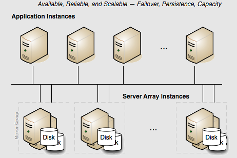

Scaling the Terracotta Server Array
Persistence: Yes | Failover: Yes | Scale: Yes
For capacity requirements that exceed the capabilities of a two-server active-mirror setup, expand the Terracotta cluster using a mirror-groups configuration. Using mirror groups with multiple coordinated active Terracotta server instances adds scalability to the Terracotta Server Array.
Mirror groups are specified in the <servers> section of the Terracotta configuration file. Mirror groups work by assigning group memberships to Terracotta server instances. The following snippet from a Terracotta configuration file shows a mirror-group configuration with four servers:
...
<servers>
<mirror-group election-time="10" group-name="groupA">
<server name="server1">
...
</server>
<server name="server2">
...
</server>
</mirror-group>
<mirror-group election-time="15" group-name="groupB">
<server name="server3">
...
</server>
<server name="server4">
...
</server>
</mirror-group>
<restartable enabled="true"/>
</servers>
...
In this example, the cluster is configured to have two active servers, each with its own mirror. If server1 is elected active in groupA, server2 becomes its mirror. If server3 is elected active in groupB, server4 becomes its mirror. server1 and server3 automatically coordinate their work managing Terracotta clients and shared data across the cluster.
In a Terracotta cluster designed for multiple active Terracotta server instances, the server instances in each mirror group participate in an election to choose the active. Once every mirror group has elected an active server instance, all the active server instances in the cluster begin cooperatively managing the cluster. The rest of the server instances become mirrors for the active server instance in their mirror group. If the active in a mirror group fails, a new election takes place to determine that mirror group's new active. Clients continue work without regard to the failure.
Note: | Server vs. Mirror Group - Under <servers>, you may use either <server> or <mirror-group> configurations, but not both. All <server> configurations directly under <servers> work together as one mirror group, with one active server and the rest mirrors. To create more than one stripe, use <mirror-group> configurations directly under <servers>. The mirror group configurations then include one or more <server> configurations. |
In a Terracotta cluster with mirror groups, each group, or "stripe", behaves in a similar way to an active-mirror setup (see
Terracotta Cluster with High Availability . For example, when a server instance is started in a stripe while an active server instance is present, it synchronizes state from the active server instance before becoming a mirror. A mirror cannot become an active server instance during a failure until it is fully synchronized. If an active server instance running in restartable mode goes down, and a mirror takes over, the data directory is cleared before bringing back the crashed server.
Election Time
The <mirror-group> configuration allows you to declare the election time window. An active server is elected from the servers that cast a vote within this window. The value is specified in seconds and the default is 5 seconds. Network latency and the work load of the servers should be taken into consideration when choosing an appropriate window.
In the above example, the servers in groupA can take up to 10 seconds to elect an active server, and the servers in groupB can take up to 15 seconds.
Stripe and Cluster Failure
If the active server in a mirror group fails or is taken down, the cluster stops until a mirror takes over and becomes active (ACTIVE-COORDINATOR status).
However, the cluster cannot survive the loss of an entire stripe. If an entire stripe fails and no server in the failed mirror-group becomes active within the allowed window (based on the election-time setting), the entire cluster must be restarted.
 Contact Support
|
Community
|
Feedback
Contact Support
|
Community
|
Feedback